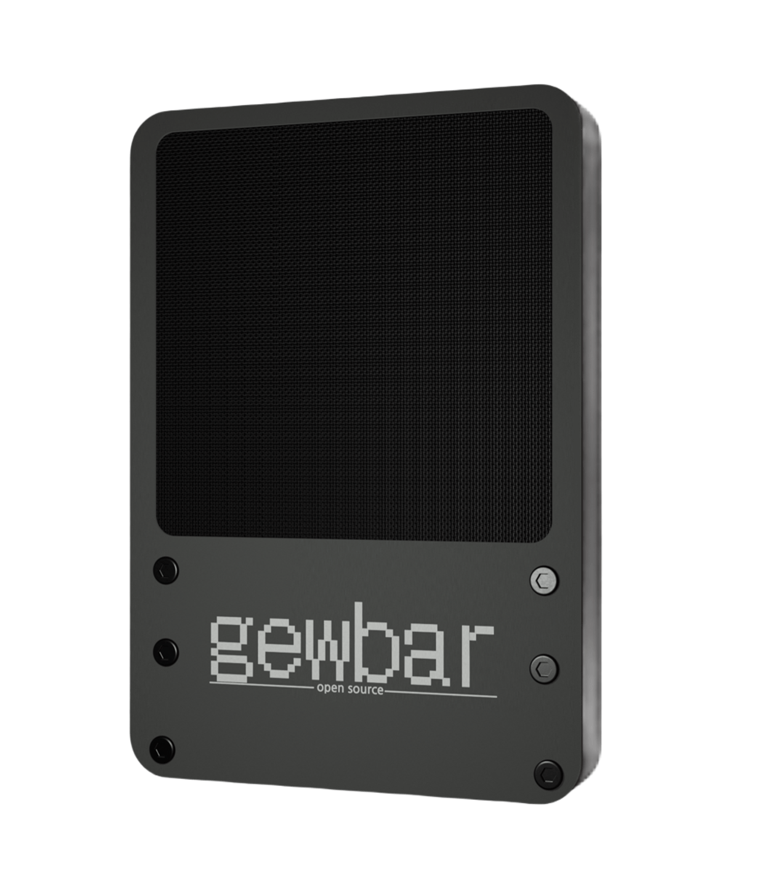

Minimal body
Flat surfaces, visible fasteners, and a serviceable front plate make the hardware easy to assemble and easy to open.
A minimal open-source microphone platform built for clean sound, repairable hardware, and a user-buildable body that can be finished your way. Choose the open files or start with the FM-1 build kit.

FM-1 is designed as a practical open-source mic: simple body construction, accessible parts, and a clean signal path that can be studied, repaired, modified, and built by real people.
Flat surfaces, visible fasteners, and a serviceable front plate make the hardware easy to assemble and easy to open.
CAD, PCB, firmware, and build notes are meant to be published so the mic can keep improving outside one workshop.
DIY builders can print and finish FM-1 in any color they want. GEWBAR's build kit keeps the clean monochrome reference direction while still leaving final assembly to the builder.
goober treats the product as a shared blueprint, not a sealed box. Builders choose their own material, color, texture, and finish; the FM-1 build kit provides the printed body parts and installed M2 inserts as a clean monochrome starting point.
A clean starting point for an open microphone ecosystem: one body, one board stack, one public path for improvements.